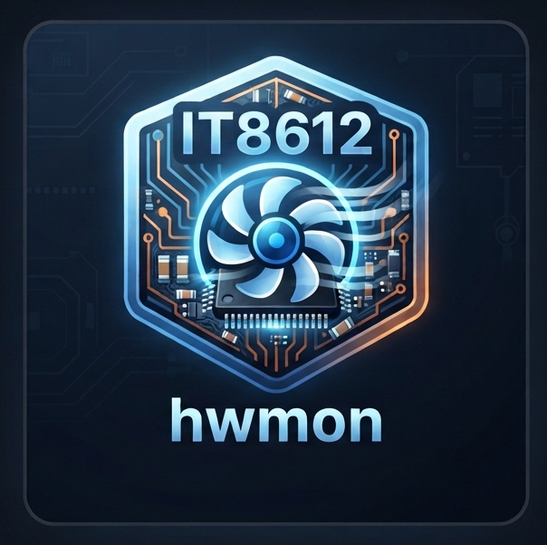

1 Introduction
it8612-hwmon is a small, read-only Linux kernel module for the ITE IT8612E Super I/O, the chip that measures temperatures and fan speeds on some OEM desktop boards. No Linux driver supports it, so on those machines Linux shows no fans at all.
With the driver, monitoring tools such as sensors, Prometheus and Grafana can see the real CPU temperature and warn when a fan stops. It has been tested on an HP Pavilion 500-526ns desktop (board HP 2B35, AMD A8-6500).
The source code, documentation and releases are on GitHub: EnriquePH/it8612-hwmon.
2 The problem
sensors-detectfinds the chip but cannot name it: “Found unknown chip with ID 0x8612”.- The in-kernel
it87driver and the out-of-tree frankcrawford/it87 do not list ID0x8612, somodprobe it87fails with No such device. - On AMD family 15h CPUs (A-series APUs), the only CPU sensor,
k10temp, reports Tctl: a control value relative to the throttling limit, not degrees. It reads 0 at idle. The real temperature comes from a thermistor wired to the Super I/O.
The usual workaround, modprobe it87 force_id=0x8603, treats the chip as the related IT8603E. It works, but it relies on a test-only parameter and the driver writes several configuration registers when it loads.
3 Finding the registers without a datasheet
ITE does not publish its datasheets. The register map was established by dumping the 256 registers of the chip’s environment controller with isadump at rest, under full load on all CPU cores and while cooling down, and seeing which ones moved:
| Register | At rest | 90 s at full load | Cooling down | Reading |
|---|---|---|---|---|
0x29 |
26 | 38 | 31 | CPU thermistor, °C |
0x2a |
28 | 28 | 28 | Board, °C |
0x2b |
0 | 24 | 4 | Tctl, equal to k10temp |
0x0e, 0x19 |
Fan 2, about 935 rpm | |||
0x0f, 0x1a |
Fan 3, about 850 rpm |
The map is the one of the IT87 family (IT8603E, IT8613E), and it87 with force_id=0x8603 gives the same values. The BIOS leaves all three fans in the chip’s own automatic mode, driven by the Tctl: they never stop and speed up from Tctl 25–30.
4 What the driver does
It identifies the chip by its own ID and exposes, through the standard hwmon interface (sensors, /sys/class/hwmon, Prometheus node_exporter):
$ sensors it8612-isa-*
it8612-isa-0600
Adapter: ISA adapter
fan1: 0 RPM
fan2: 945 RPM
fan3: 852 RPM
temp1: +28.0°C
temp2: +30.0°C
temp3: +1.0°CIt never writes to the environment controller, so the fans stay under the chip’s automatic control. The only writes are the standard Super I/O configuration sequence used once at load time to find the controller, the same one sensors-detect and it87 use. The code passes the kernel’s checkpatch.pl --strict with no errors, warnings or checks, and builds with W=1 without warnings.
On the tested board, under a ten-minute full load, the CPU went from 27 °C to a steady 50 °C, and the fans sped up by themselves from about 935/850 to 2122/1366 rpm.
5 Installation
Kernel headers and DKMS (Debian/Ubuntu):
sudo apt install linux-headers-$(uname -r) dkms build-essential
git clone https://github.com/EnriquePH/it8612-hwmon.git
cd it8612-hwmon
make build
sudo insmod ./it8612.ko
sensors it8612-isa-*To install it for good, rebuilt with every kernel update and loaded at boot:
sudo make dkms-install
echo it8612 | sudo tee /etc/modules-load.d/it8612.conf6 Tested hardware
| Machine | Board / BIOS | CPU | Kernel |
|---|---|---|---|
| HP Pavilion 500-526ns | HP 2B35, AMI 80.06 (2015) | AMD A8-6500 | 6.12 (Debian 13) |
Reports from other boards are welcome as GitHub issues, with the output of sensors and, if possible, a register dump.
7 Disclaimer
The driver is provided as is, without any warranty (GPL, sections 11 and 12): use it at your own risk. It has been tested on one board only, and it does not control the fans or protect the hardware. See the full disclaimer.
8 License
GPL-2.0-or-later. Super I/O access follows drivers/hwmon/it87.c from the Linux kernel.